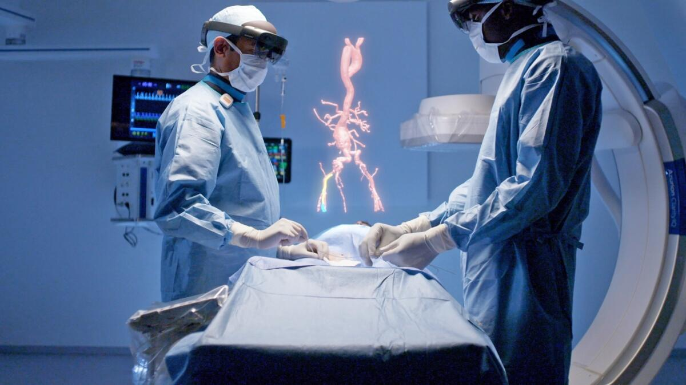

¿Cómo impacta la RV y RA en la medicina moderna?
La medicina es uno de los campos donde la Realidad Virtual y la Realidad Aumentada han tenido un impacto más profundo e inmediato. Desde la planificación preoperatoria hasta la terapia psicológica, estas herramientas ofrecen un nivel de precisión y seguridad sin precedentes.
En el ámbito quirúrgico, los cirujanos utilizan imágenes de Realidad Aumentada proyectadas sobre el cuerpo del paciente durante las intervenciones. Esto permite visualizar órganos internos, vasos sanguíneos y tumores en tiempo real.
Por otro lado, la Realidad Virtual ofrece entornos altamente controlados para el tratamiento de fobias, trastorno de estrés postraumático (TEPT) y en programas de rehabilitación motora.
Casos de Uso Destacados
- Planificación quirúrgica personalizada mediante modelos tridimensionales del paciente.
- Entrenamiento de estudiantes de medicina con simuladores hápticos sin riesgo humano.
- Terapias de exposición en psicología asistidas por entornos inmersivos de RV.
- Rehabilitación física gamificada para pacientes en recuperación motora.

Aplicaciones Médicas de RV y RA
| Sistema | Tecnología | Caso de Uso Clínico |
|---|---|---|
| AccuVein | Realidad Aumentada | Mapeo vascular en piel para venopunción precisa |
| Osso VR | Realidad Virtual | Entrenamiento de cirujanos ortopédicos |
| Amelia Virtual Care | Realidad Virtual | Tratamiento de ansiedad, fobias y manejo del dolor |